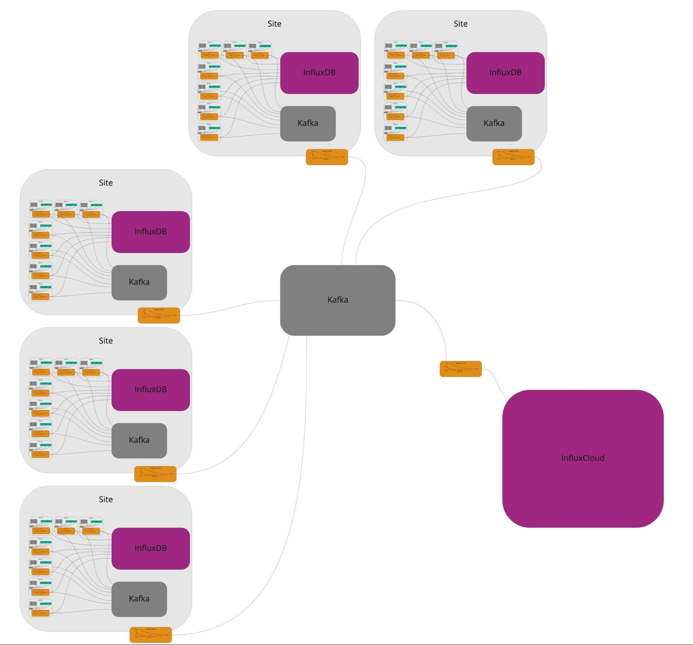
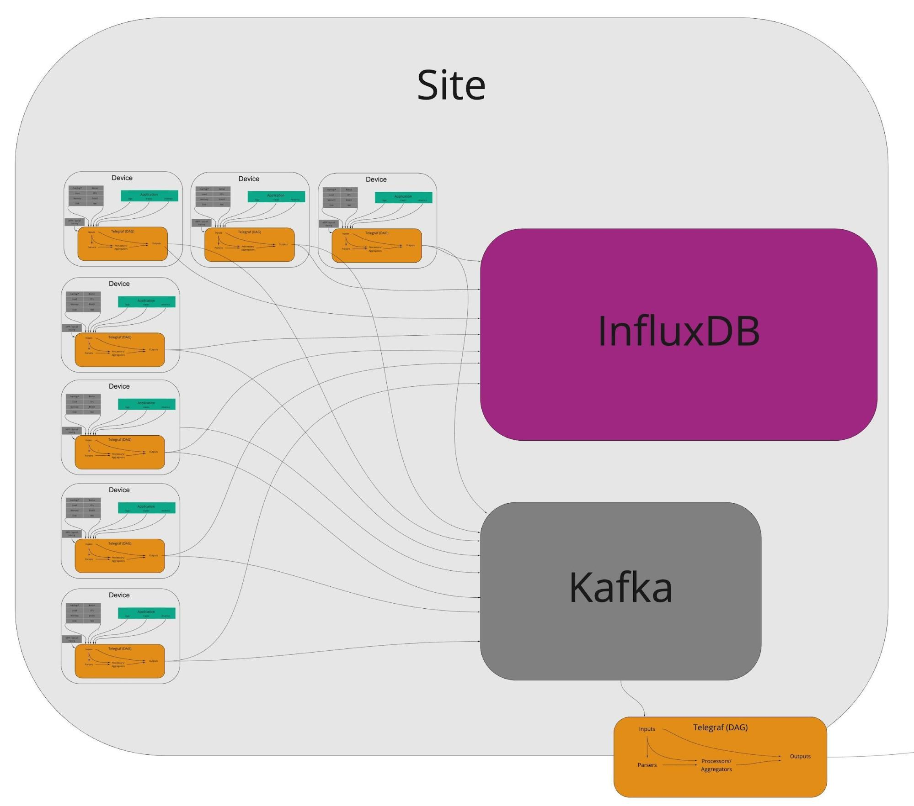
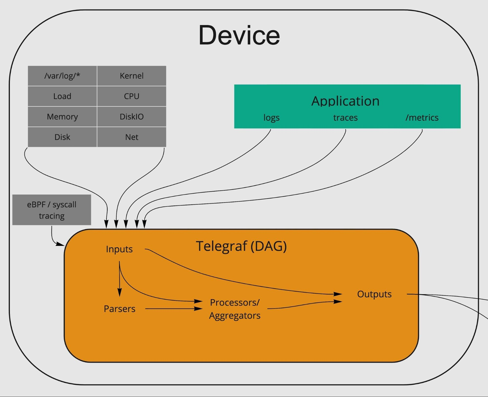

Executive Summary
Problem:
Time series data loses value over time. The very design of InfluxDB is evidence in support of this claim. The earlier data needs processing the more amplified this concept is. In real-time analytics use cases, this value decay applies to data in its transmission to the database as well. As InfluxDB is often the end destination of data, it can necessarily be assumed that data can and often does have its value extracted before InfluxDB sees it.
Innovations in stream processing exacerbate this problem by draining the value of the data in the middle of the data path. Monitoring, alerting, and event-driven programs can be run from the streams which leaves storage solutions supporting use cases that are less valuable.
Proposal:
InfluxData would offer an open source / open core stack for driving the intelligence of monitoring any and all “things” as close to the edge as desired. The proposal is to a) add to Telegraf more intelligent configurability that supports more advanced programmatic analytics at the edge, and b) include InfluxDB 2.0 for site-level analytics where larger datasets and multi-device context is needed.
Business case:
Value to customers
- Real-time insights for proactive remediation
- Edge-automation to reduce human intervention
- Cost savings over network
- Cost savings in cloud computing
- Cost savings in cloud storage
- Guard against “air gaps”
- Security -- less data leaving private network
Value to InfluxData
- Take control of data path -- own the beginning and end
- Enables more use cases that were originally too high cardinality
- Commercially offered solutions/”presets”
- Flux adoption
Edge-Computing / EDA Vision (v1.0 draft)
Table of contents
Motivation
Market direction
Edge-computing is a North Star for the IoT world -- in some respects, it already exists in the form of “control loops” -- and an aspiration of the infrastructure monitoring world. Other groups of people in this world are noticing this as well. Here is a research paper that points to the need for platform-based edge-computing. Here is one on specifically edge stream processing! Machbase -- formerly Infiniflux -- seems to be positioning itself for this. EdgeDB (also a paper on this) is an example of a company trying to do this.
Outside of the data being captured and processed at the edge are innovations around edge infrastructure. For instance, at least two companies are notably trying to take Kubernetes to the edge. Canonical’s MicroK8s is aimed at doing this and Rancher’s K3s is as well. It’s also worth noting the advancements made and the trending direction toward “hybrid cloud” with announcements like Google’s Anthos or Equinix’ acquisition of Packet to enable more fluid scaling of their customers’ hybrid clouds.
Lastly, it’s worth noting that there is a significant camp in academia proposing that perfect accuracy can be sacrificed for the benefits of edge computing. BlinkDB out of UC Berkeley is centered around this idea. This is a paper out of University of Minnesota and UMass that discusses how we can implement practical online algorithms referencing tested offline algorithms, all in the name of reducing latency while retaining an effective error rate in edge analytics. A paper from UC Berkeley, UMich, and MIT notes that “it has been widely observed that many applications can tolerate some degree of inaccuracy”.
While we’re at it, here’s another supporting paper published June 2020!
It’s also important to keep in mind that -- in addition to the academic support this idea has -- most time series analysis is prone to some degree of error to begin with. Aggregations, dropped metrics, coefficient omissions in ML, etc., all lead to loss of information in some form or another.
I believe InfluxData is poised to take advantage of the still rather greenfield opportunity of processing time series data at the edge.
What can edge-computing accomplish?
- Low latency and data transit costs of event-driven decisions -- no more waiting for data movement, storage, and then query
- Alerts
- Autoscaling events
- Reactions to external factors like internet outages between edge and cloud
- Pre-aggregation of data streams
- Downsampling (multiple write streams)
- Pre-computing of aggregations users were going to do at query time anyways, like percentiles, rates, means, mins, maxes, etc.
- Conditional routing of data
- Conditional downsampling and other behavior
- Local dashboarding (exists in some form now but can’t be forgotten)
Some current edge-computing examples:
- Google Photos stabilization: The Google Photos app (comes with Android and free on Apple Store) has the ability to stabilize moving images. It does this with machine learning. It does this with machine learning on your phone. That’s the edge. The amount of data needed to train and test a model to do moving image stabilization is absolutely infeasible for a phone to support...but the model can be trained elsewhere...and deployed to the phones. That’s exactly what happens. The petabyte-scale data processing conducted for training a stabilization model is distributed across huge clusters of compute engines but the trained algorithm, itself, is shipped as part of the Photos app.
- Google Photos like-images: Photos also has the ability to group similar photos to suggest grouping them into an album. This also happens at the device level.
- IoT control loop: Monitoring the health/performance of sensors and meters is one thing but remediating issues or making optimizations automatically, without human intervention, is significantly more valuable. This quote from an IEEE paper sums it pretty nicely:
Internet of Things envisions a self-configuring, adaptive, complex network that interconnects 'things' to the Internet through the use of standard communication protocols. … The things offer services, with or without human intervention, through the exploitation of unique identification, data capture and communication, and actuation capability.
OSIsoft is a major player in this vertical. I’m unfamiliar with the detail on this but I’m confident that its closed/proprietary nature makes for rigid tailoring of the types of remediations operators likely want or need to do.
- Sensu and Nagios: Nagios is the legacy version of Sensu’s more modern day approach to alerting at the edge. These technologies run “checks” against systems at the edge and evaluate the need for alerts based on the results of those checks. In other words, before waiting to query a database, they alert in real-time at the edge.
- Drawbacks: These might be obvious. Alerting at the edge provides no historical view. You can’t run a dashboard off of it. You can’t apply context. False negatives and false positives are classically common as a result of a lot of this. Also, alerts aren’t the only thing you want out of monitoring. Simply being able to observe your assets as they work comes with its own value...and this can’t be done with edge checks on their own. So why not do both...while making the edge aspect smarter?
- High frequency trading: While this one may not be one we take part in (not low level / fast enough), it’s analogous to the theme. These firms care about every microsecond so they have no choice but to make decisions on what to trade as soon as the data that drives those decisions becomes available. Waiting for data to traverse the network, write to a data store, and be analyzed from there...would put them out of business. Like the Google Photos example, they train their trading models on larger infrastructure and ship the ready models to the edge to make gametime decisions.
Feasibility
I believe current lack of progress in this realm is less of an indicator and more of an opportunity for Influx. That said, I’ll start this section by naming some possible reasons why now is the time as opposed to previously:
- Available supporting infrastructure has relatively recently become efficient and uniform enough to enable this type of work. to host computing applications/services. The edge is often now comprised of lightweight POSIX-based OSes that can be instrumented with ease. Also, there is more and more tooling developed to make computation far easier to program. More on this and how it relates to us later.
- Edge-computing inherently requires having distributed and isolated computation apps/services. The meaning of “distributed” here matters to understand why this is not actually the challenge one might, at first, think it is. While the computations are taking place physically separate and on entirely separate datasets, they’re not meant to know about each other. The computations that would be done here would have all the information they need within their own [micro-]environment. Context across distributed systems only matters in cloud-computing and that would come later. Any insights that can be gleaned given only the data available locally...should be, and that should happen as quickly and as close to that data as possible. Even in cases where further context is needed, “the edge” really isn’t black and white. It’s not “either you’re computing at the most primitive data source or you’re not edge-computing”. Edge-computing can happen at different “tiers” as well. These “tiers” could take the form of, say: edge devices are tier 0, edge clusters are tier 1, pipeline to the cloud is tier2, and cloud is tier3.
- More reliable stream-table duality. Edge makes joining tables (state) with streams less volatile and error-prone. With datasets downstream and in databases, ingest is less predictable. Therefore, use cases where, say, you may want to do streaming analysis on certain datasets/keys and batch analysis on others, are not reliable anywhere but at the edge where volatility of workload is at its lowest.
- There is a spectrum of what should and should not be edge-computed, fog-computed, and cloud-computed. The paper from University of Minnesota cited toward the beginning states this flexibility nicely, stemming from their own experience:
...it is not always feasible to compute exact results with bounded staleness. Further, many real-world applications can tolerate some staleness or inaccuracy in their final results, albeit with diverse preferences. For instance, a network administrator may need to be alerted to potential network overloads quickly (within a few seconds or minutes), even if there is some degree of error in the results describing network load. On the other hand, a Web analyst might have only a small tolerance for error (say, <1%) in the application statistics (e.g., number of page hits), but be willing to wait for some time to obtain these results with the desired accuracy.
It is the job of this model to enable both use cases to be met successfully in the same infrastructure.
Business case
Let’s discuss why edge-computing is such a sought-after concept:
- Faster insights -- true proactivity -- as close to real-time as one can pragmatically get
- Cost savings on data transfer / network
- Cost savings on central infrastructure (cloud computing)
- from “big data” to not so big
- there will be a lot of use cases for having all the data stored centrally still but, at the very least, the need for processing/computation on that data will be reduced
- More secure as processing is happening on customer premises and is subject to all of the same security their assets are.
Why InfluxData is the right company to tackle this problem:
- InfluxData historically deals with time series analytics better than most others. InfluxData also created and maintains one of the most popular ways of getting time series data from the edge to the core. This combination is conceptually a perfect starting point for edge-/fog-computing. Imagine Telegraf doing the computations that can and should be done at the edge, computation that needs slightly larger datasets or more context being done on an InfluxDB node, and then all the results or any other raw data being forwarded on to the core for higher level observability.
- In most cases, these computations are of a time series nature and we are home to a lot of expertise in that field.
- Event / point-in-time data is often irregular and requires a push-based model. Exporting irregular data to be scraped later (Prometheus’ PushGateway approach) doesn’t provide the same real-time value as a true push-based model.
- By offering more analytical capabilities in an edge service that pushes results out, you reduce the value of an incumbent Prometheus server.
You may think that discussing specifically Prometheus is too narrow in scope. My argument against that is that it really is the de facto Kubernetes monitoring solution...and Kubernetes has already won the consolidation game. It is the future of infrastructure and being THE solution for monitoring it is obviously one of the more impactful strategies we can follow. Let’s not forget that Docker was poised to take the container orchestration market by storm by adopting Kubernetes as a first class citizen right away. They didn’t and their business has failed.
- Influx already has a very popular agent that has a plugin-/python-based (embedded) computation method. This allows for higher adoption out of the gate...which leads to more user feedback and more noise for the brand.
- We’re already building towards this!
- The platform and SRE teams are discussing ways to enable federation of workload from edge to core. Their specific use case centers around Kubernetes, but the idea transcends many other use cases. This whole proposal is designed to enable that exact thing but adds super-intelligence to it.
- UI team is working on turning the query/task/alerting UI into a notebook-style which indirectly supports the idea of using Dean’s proposed ML UI work.
- Telegraf team is talking about enabling Telegraf to more intelligently deal with data before it writes it to InfluxDB.
- Given we’re already building toward this (perhaps without knowing it) and we already have an edge presence, this gives us the ability to start adding value very soon. We can incrementally build toward what will be a much larger end goal starting with small but fruitful steps in the direction today.
- Telegraf’s new execd processor plugin allows for massive extensibility of Telegraf
How does this solve problems for specifically InfluxData?
- The challenge of cardinality is reduced/mitigated: For most purposes -- in the context of the computations happening at the edge -- it is eliminated.
- Open source network monitoring is highly sought after: Related to above, there is a well-known market ask for better open source / platform-based monitoring of networks. Currently, this type of monitoring is a hard problem to solve in the database world because of its natural cardinality. My hypothesis is that doing some of the per-IP / per-device -- which would have originally required large grouping operations on a larger cloud-based dataset -- could be done at the edge and drastically reduce cardinality of the central data store (the core).
- Competitive advantage overall: Getting smarter about observability closer to data sources means less need for services like Prometheus, for instance, at the per-K8s-cluster level. In a way, this somewhat forces the market’s hand toward the push-based model...which we typically tout as superior anyway.
- Telegraf’s open output policy gives us more market control: Telegraf outputs to other data sources. This includes many of our direct and even indirect customers. Adding value to the data in Telegraf gives the commercial control back to InfluxData and makes this inherent openness work to our advantage.
- Commercial preset solutions: Given that edge-computing implies lack of attendance/attention toward the computations, people may not want to do much hands-on work in these systems. It seems foreseeable that there would be a market opportunity for commercial “presets” of computations. Since we would have control of the data collection as well as the processing, this seems plausible.
- Flux adoption: If part or all of this story involved the use of Flux (say, embedded in Telegraf), the popularity of Telegraf could feasibly enable -- or even necessitate -- the adoption of the language, itself.
- Strategic control over the data pipeline: The data pipeline is traditionally controlled by messaging and stream processing systems. I believe this point is one of the more pertinent ones, so it gets its own embedded writeup:
This writeup centers around where the value of the data lies and who controls it:
Queueing systems and stream processing engines are getting more scalable, efficient, fault-tolerant, and smarter. Kafka, for instance, owns a plurality of queueing use cases and now Kafka Streams and KsqlDB have been added to glean insights from the data piping through the Kafka brokers themselves. Popular stream processing engines in the Apache ecosystem also work well with Kafka and many other popular queues like RabbitMQ and Pulsar. Kafka is not the only messaging system we should be thinking about.
To narrow the scope of the idea, however, I will talk specifically about Kafka. In a large enterprise that is using Kafka as a distributed ledger for all events within a larger infrastructure (its real original purpose and where it has found its success), it only makes sense that additional tooling/APIs to complement it would be a good first place to look for extending functionality. Kafka Streams has enabled Kafka users to mung data as it sits in the queue. Applications can use this API to glean insights and provide real-time (essentially) evaluations of streaming data with which to make both human and programmatic decisions. Think auto-scaling events, alerts, etc.
Now add in KsqlDB, an API that makes it easier to build applications that need to process streaming data. Applications can use the SQL language to query streams/tables directly or generate Materialized Views of tables and streams to be queried efficiently. Think of this as providing secondary indexing or, from the application’s perspective, a cache that is generated at the storage level so you don’t hit normal caching problems like data invalidation and certain race conditions.
Given the above, it’s not a far reach to think of how a UI like Grafana could integrate and provide real-time monitoring on top of Kafka, itself….instead of a time series database.
You might be thinking, but what about retention? That’s where time series databases come in. We all know that time series data is where you want your historical time series data. That said, it’s worth discussing the logical value of that.
Let’s assume, for a moment, that real-time monitoring is happening before data reaches the TSDB. What happens to time series data requirements after that? If the data has already been evaluated for alerts, real-time dashboards, early remediation, and real-time forecasting….the only stuff left for the TSDB is longer time range OLAP. The TSDB is now used for things like capacity planning, machine learning / algo training, and other more ad hoc data science-y type analysis.
What do all of the data science-y queries have in common when they’re not implemented in real-time? They span long time ranges of data. The question then becomes, just how valuable is constant availability if the queried dataset is so large and doesn’t need to be conducted in real-time? This is subjective to both the data scientist and the use case but I’d argue, in general, not very. It’s “valuable”, but is it valuable enough to procure software that moves the needle for our business? Our very own sales history supports this.
Table that question for a second and consider one more thing. Not only has the real-time value of the data left the building by the time the data reaches the TSDB, it’s totally reasonable that the data the TSDB does see is significantly downsampled or filtered. Downsampled data is, as we know, less valuable per data point….and fewer data points over all. This means less revenue for the TSDB vendor.
Proposal
This proposal is aimed at leveraging what we do best as a platform that both collects and stores time series data. The way I see combating this potential new threat to not just us but our entire space, is taking advantage of the popularity of Telegraf and its proximity to data sources to supersede/intercept the processing done on the streaming data. In other words, we would do the “stream processing” before the data touches streaming tools like Kafka, Flink, Spark, etc.
Currently, we support some very basic processing of data before it reaches the database. If InfluxData can support/enable/provide edge-processing of streaming data -- essentially at the agent level -- that handles the 95th-99th (arbitrary guess right now) percentile of use cases, we can retain the value of the data in our ecosystem.
You might now be thinking a) what would implementation look like, and/or b) how does doing this processing with our free software solve the revenue problem? Well, the answer to “b” is that we’d likely look to monetize this in some way. Maybe just support (after all, this whole concept brings a lot more value to the edge, so support then becomes more necessary for our users). However, there are more and more requests for a clusterable (HA and auto-scaling) Telegraf. This could be offered commercially as well. Telegraf, as an agent, doesn’t lend itself to commercial high availability needs so much but Telegraf that is processing data and making data-driven decisions at the edge likely does.
Commercialization
Touched on briefly in the section about how streaming engines can be competitive, any edge processing could reduce the overall data being ingested into InfluxDB on premise or in the cloud. The need to replace that revenue would need to be part of the overall strategy for this development. Any attempt to close source telegraf would likely be disastrous.
Some ideas in this regard:
- License a component that works in conjunction with telegraf as a licenseable add-on to perform functions described in this proposal, or to allow only a small subset of the functionality as open source.
- License ML algorithms trained and tested beforehand that they can deploy to the edge.
- License the management/deployment of edge services
My opinion on an MVP
First, here is a version of the envisioned architecture. The below represents a “fog-computing” model. This represents the entirety of the infrastructure:

Next, we zoom into the site-level architecture:

Lastly, we zoom into the device-level architecture. This whole proposal really centers on this part. This is the edge:

30,000 Feet
To have control over processing at the edge -- and using our current tooling -- Telegraf and/or Flux need to support at least a large subset of the types of processing people are doing in their data [streaming] pipelines as well as point-in-time decision making.
- It would have to support correlation between data streams -- something not done in point-in-time alerting systems like Sensu/Nagios.
- It would also have to do “a lot” (“a lot” is TBD) of what traditional stream processing tooling does, and be intelligent...all while being easier to work with and maintain. If Telegraf can do p85 of what Spark, Flink, and Kafka Streams can do, that could be all we need to regain control of the value of the data.
With some extended functionality of the API, we could consider bi-directional processing and traffic directing. If telegraf is processing at the edge, couldn’t it also send its evaluations back to edge systems for consumption? This would look more like the control loop of OSI PI. This may be more of a reach goal but a good one to keep in mind!
Ultimately, the model proposed is flexible. As the University of Minnesota paper suggests:
...a geodistributed analytics system must determine how much computation to perform at the edges, and how much to leave for the center (i.e., where to compute), as well as when to send partial results from edges to the center.
The level of control we give the user of this model is an implementation detail but suffice it to say that we have options.
10,000 Feet
The high level MVP (just a hypothesis for now) for edge processing needs to support:
- Point-in-time event data evaluation
- Conditional routing of metrics/events based on said evaluations; routing would include:
- Other data stores at entirely separate addresses
- Other “buckets” within <data store> -- supports dynamic downsampling as well
- Windowing -- sliding and tumbling
- Stream joins -- or at least no logical partitioning of “streams” -- required for correlations
Nice-to-haves:
- Dynamic aggregation/downsampling or aggregation disabling. Disabling aggregation when <process> evaluates to <result> so that raw data can be retained for longer is something that has been requested. More detail in 1,000 foot view below.
1,000 Feet
MVP:
- Rate, difference, percentile, forecasting (triple exponential moving average, etc.),
- Requires holding state for <time period>
- Can use t-digest (and/or other algorithms) to estimate values over time slices
- I’m assuming it’s desirable to have control over the sample size of the data to be computed
- Support for conditionals and/or loops/maps
- Support for true streaming -- not only micro-batching
- Micro-batching places at least some burden on the asset
- Micro-batching is an inefficient way of dealing with point-in-time metrics/events
- If Telegraf, I imagine Telegraf will need better support for DAG-like pipelines between inputs, parsers/processors, aggregators, and outputs
- Currently, Telegraf supports only namepass/namedrop, tagpass/tagdrop, fieldpass/fielddrop, which is a rigid and inefficient way of routing “jobs”
Nice-to-haves:
- RE dynamically disabling aggregations: this is a desired capability when users are assumed to be pre-aggregating and retaining data at different levels of precision for different retention periods. The difference is, in certain cases (incidents or periods of high utilization), users will want to know what was happening during that time precisely. If they want to look back at that information at a date that outlives the “raw” dataset’s TTL, they can’t unless they have it stored in a “bucket” with longer retention. Storing raw data forever is expensive in more ways than one. Dynamically disabling pre-aggregation can allow for storing raw precision data only in “patches” during periods of interest.
Specific functionality:
- Level == <level>
- Message == <message>
- Metric value is >, <, or == <value>
- Short-window evaluations for thresholds/deadmans
- T-digest (et al) estimations of percentiles/quantiles (if doesn’t exist on the device/app itself already)
- Rates
- Embedding scripting (Starlark, MicroPython, Flux, Lua, etc.) to trigger other processes that are not just alerts
- Auto-remediation (may not directly control device but could be an interface that enables this)
- Auto-scaling
- K8s metrics server endpoint as an infrastructure example
- Support for UDFs / custom models
- Cloud computing will still be important as AI models will be trained on larger infrastructure. Those models should be deployable and easily pluggable here.
- Fog computing as well
- This is where I see InfluxDB OSS playing a major role!
- Some form of series-/stream-joining
- This enables correlations to be drawn in real-time
- Collect hardware-level, kernel-level, system-level, [virtualization-level,] and application-level metrics, traces, and logs, enabling the edge to draw causality/correlations
- This might be the real North Star
- Update self with new AI models if desired
- Telegraf can already pull config from InfluxDB. With an instance of InfluxDB deployed per “site”, the Telegrafs/“edge-computing nodes” can regularly pull new configuration -- which has been updated with a new model written in the embedded configuration language -- and essentially learn on its own this way.
- Could be used for better anomaly detection, perhaps more intelligent trace sampling (?), etc.
Possible capabilities:
- Easy streaming statistical analysis
- Stddev, variance, etc.
- Very little state is required to run these on streaming data so estimating may not even be necessary
- If can hold state of “full time series” (for a certain period -- say a day or a week) and compare sliding windows to that to generate Distance Profiles, these distances can be used in alerting...or they can be metrics emitted either in addition to or in lieu of the raw data….or both.
- Matrix Profile estimation can be done if needed. Python library STUMPY provides either.
- Applications of summarization (below)
- Summarization sketches for statistical analysis that would otherwise require larger samples and time windows
- T-digest
- HyperLogLog count sketches
- In addition to simple aggregations on values for an individual series (“metric” for all intents and purposes), grouping by keys to make aggregations multi-dimensional.
- Determine on-the-fly discretization of features and send signal of new groupings so the core engine can make the necessary change
- Is this something that could integrate with the Spark API, for instance?
- Conditional routing/downsampling
- If <evaluation result> send alert to <handler>
- Log alert and forward on for storing/processing downstream
- Keys with <value>/<type> go to <output>
- Keys with <value>/<type> go to <processor>
- If <evaluation result> send to <output> / <processor>
Profiles:
- Alert on a specific event in real-time
- Rather than sampling every 10s, 30s, etc., sample continuously across a time window and alert specific values as they occur
- The alert having happened is what the core would see, but the user wouldn’t be waiting for the alert to happen from the core.
- Alert on string of events in near-real-time
Data we still need to validate this proposal:
- What are common and perhaps uncommon-but-powerful stream processing operations happening today on time series data?
- What, out of the above, can feasibly be brought to the edge (smaller windows and sample sizes...and lower resource allocation)
- General gauge on how popular this idea would be? Also, market reception to its viability -- just because it is viable, doesn’t mean the market will give it a chance. Things can be built too early.
Problems to solve:
- Data path’s lack of awareness of stochastic changes to time series due to external influence
- If configuration of a system is changed, how is that recorded as accompanying information with a resulting change in the time series data about that system?
Links:
Value of edge analytics: https://www.embedded-computing.com/guest-blogs/edge-analytics-complementing-cloud-computing